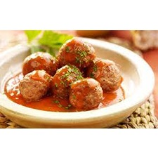

Ingrediënten:
- Gehakt
- Tomaat
- Ui
- Knoflook
- Peterselie
Bereiding:
- Meng het gehakt met gehakte ui, knoflook, peterselie en een snufje zout en peper.
- Vorm gehaktballen van het mengsel.
- Verhit wat olie in een pan en bak de gehaktballen tot ze goudbruin zijn.
- Voeg gehakte tomaten toe aan de pan en laat sudderen tot ze zacht zijn en een saus vormen.
- Breng de tomatensaus op smaak met zout, peper en eventuele andere kruiden.
- Serveer de gehaktballen met de tomatensaus.
